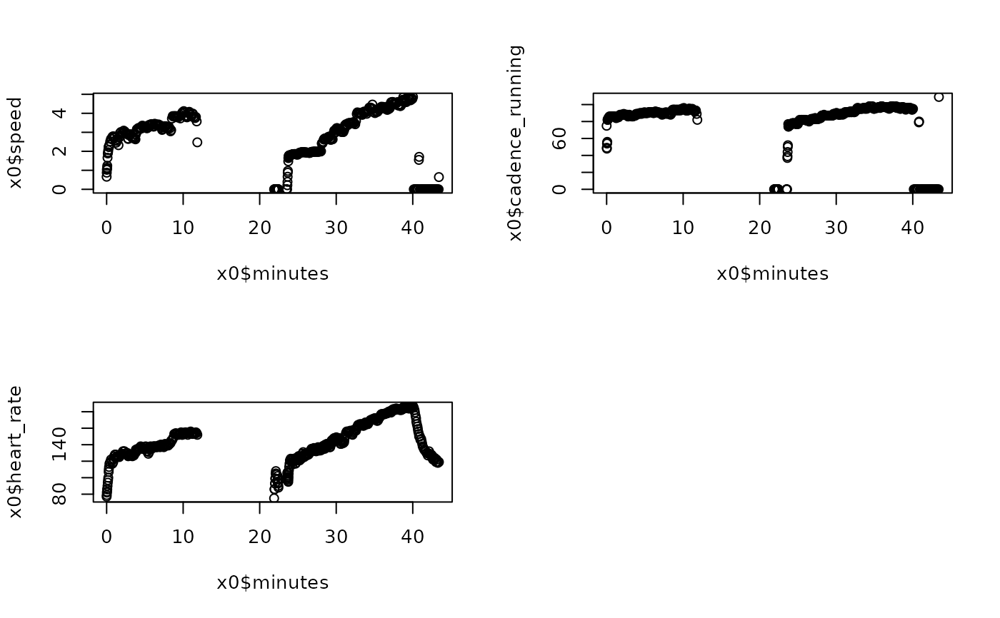
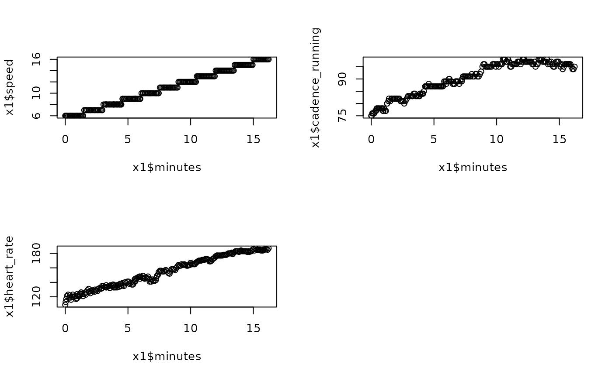

Load, trim, fit, and display model
Usage
prepdata(
fname,
startminutes = 0,
endminutes = 1000,
speedmin = 6,
speedstep = 1,
timestep = 1.5,
useDeviceSpeed = FALSE
)Arguments
- fname
Path to the tcx file
- startminutes
Time (default: 0 minutes) at the start of the first step
- endminutes
Time (default: 1000, in minutes) at the end of the last step
- speedmin
(default: 6 km/h) Speed of the first step (set on treadmill)
- speedstep
(default: 1 km/h) Speed increment of each step
- timestep
(default: 1.5 minutes) Length of time of each step in minutes
- useDeviceSpeed
(default: FALSE) If TRUE, use the speed as returned by the device instead of the manually-set step speeds
Value
a data.frame with early and late times potentially trimmed, and speed potentially over-ridden with manually set step values.
Details
Actually you don't need to import a TCX file, what matters for the `fitmodel()` function is that the data.frame has columns `time`, `heart_rate`, and optionally `speed`.
If you import a TCX file that is not from Garmin, you may need to rename the column containing heart rate to `heart_rate` and the column containing time to `time`. The `time` column should be in seconds or a format that can be coerced to seconds using `as.numeric()`, such as the POSIXct/POSIXlt formats that most services likely provide. If `useDeviceSpeed` is FALSE, then the speed column should be `speed`.
Examples
# Note, files in this package are gzipped to save space. TCX files exported
# from Garmin Connect or others will not have the `.gz` extension and you
# should not use `gzfile()`.
fname = system.file(file = "extdata/2023-09-15.tcx.gz",
package = "ConconiAnaerobicThresholdTest")
# These plots can help get the start and end time correct.
x0 <- prepdata(gzfile(fname), useDeviceSpeed = TRUE)
oldpar <- par(mfrow=c(2, 2))
plot(x0$minutes, x0$speed)
plot(x0$minutes, x0$cadence_running)
plot(x0$minutes, x0$heart_rate)
# Once you have start and end times correct, set useDeviceSpeed = FALSE
# if speeds were set manually on the treadmill.
x1 <- prepdata(gzfile(fname), startminutes = 23.8, endminutes = 40.1,
useDeviceSpeed = FALSE)
par(mfrow=c(2, 2))

plot(x1$minutes, x1$speed)
plot(x1$minutes, x1$cadence_running)
plot(x1$minutes, x1$heart_rate)
par(oldpar)
